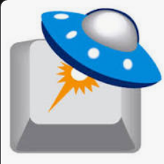

常用网站
发现导航 - 精选实用导航网站
福利吧导航
发现导航 - 精选实用导航网站
蓝点导航
发现导航 - 精选实用导航网站
优设导航
百万设计师都在用的优设导航
站点导航
发现导航 - 精选实用导航网站
导航站
发现导航 - 精选实用导航网站
一份爱小工具
田字格字帖生成器系列工具，自2013年上线以来，一致致力于为您提供更优质全面的中文学习资源和更好的用户体验，并坚持完全免费。
在线工具
发现导航 - 精选实用导航网站
在线工具
发现导航 - 精选实用导航网站
厘米天空
发现导航 - 精选实用导航网站
CSDN
专业开发社区
远景论坛

微客极客社区
电脑爱好者
关注科技新生活
少数派
效率工作,品质生活
IT之家
发现导航 - 精选实用导航网站
Matters
致力搭建去中心化的寫作社群與內容生態
遨游今日
发现导航 - 精选实用导航网站
简书
创作你的创作
十佳测评
推荐最好的产品
新闻资讯
发现导航 - 精选实用导航网站
新闻资讯
发现导航 - 精选实用导航网站
片源下载站
发现导航 - 精选实用导航网站
字幕下载站
发现导航 - 精选实用导航网站
影视
发现导航 - 精选实用导航网站
电子书
发现导航 - 精选实用导航网站
放松心情
发现导航 - 精选实用导航网站
资讯和娱乐
发现导航 - 精选实用导航网站
PowerToys
Microsoft PowerToys 是一套供高级用户使用的实用程序，用于调整和简化他们的 Windows 体验，以提高工作效率。
uTools
新一代效率工具平台 自由组合插件应用，打造专属你的趁手工具集
snipaste
Snipaste 是一个简单但强大的截图工具，也可以让你将截图贴回到屏幕上！
Everything
基于名称快速定位文件和文件夹。
Bandizip
韩国压缩软件
Bandisoft
Bandisoft 成立于 2008 年，是一家为消费者和企业提供录音和存档软件的领先公司。其消费类产品包括 Bandicam、Bandizip、Bandicut 和 Honeyview。
win-rar
集文件压缩、加密、打包和数据备份为一体的实用软件
FastCopy

FastCopy 是 Windows 上最快的复制/备份软件
Code Sector
更快、更安全地复制文件
装机必备
发现导航 - 精选实用导航网站
AdGuard
拦截所有种类的广告,移除烦人的网络元素,节省流量并加速页面载入,工作于浏览器与应用程序,保持网站功能和外观.
火绒安全
国产优秀杀毒软件
OpenArk
OpenArk 是一款适用于 Windows 的开源反 rootkit（ARK）工具。它的目标是反转/编程助手，用户还可以发现操作系统中隐藏的恶意软件。
虚拟机
业界标准的桌面 Hypervisor，用于在 Linux 或 Windows PC 上运行虚拟机。
沙盒
基于沙盒的隔离软件，适用于基于 Windows NT 的 32 位和 64 位操作系统
Tails
一个便携式操作系统,可以防止监视和审查。
云子可信
企业网络监控
系统安全
发现导航 - 精选实用导航网站
进程资源管理器
查找进程打开了哪些文件、注册表键值和其他对象，加载了哪些 DLL 等。
DIMS++
Dism++ 是一款 Windows 系统管理优化工具，它解决了我们安装、维护系统的一大痛点问题——自定义设置和优化。相当于一个“一站式”管理优化工具集。
KC Softwares
KC Softwares - 软件开发公司。SUMo、DUMo、KCleaner 和其他功能强大的系统实用工具的开发者。
DriverGuide
免费下载驱动程序，快速解决电脑问题。 只搜索和下载您需要的驱动程序更新 - 快速、安全、简单！
FreeCommanderXE
FreeCommander 是标准 Windows 文件管理器的易用替代品
ashampoo
Ashampoo - 创新的软件制造商，提供舒适、功能强大的产品，提高电脑工作效率。
Mactype
更好的 Windows 字体渲染。
图吧工具箱
DIY爱好者的必备工具合集
系统相关
发现导航 - 精选实用导航网站
OneLoupe
OneLoupe 是放大屏幕上所有内容的必备工具。这款小巧的放大镜简单易用，随时准备在您需要时查看所有细节，甚至连 I-Net 中的小字也能破译。使用 OneLuope 放大屏幕
OotD
直接在桌面上放置功能齐全的 Microsoft Outlook 日历。您可以创建项目、编辑项目、删除项目等。
Launchy
Launchy 是一款免费的跨平台工具，旨在帮助你忘掉开始菜单、桌面图标甚至文件管理器。只需敲几下键盘就能启动文档、项目文件、文件夹和书签！
QuickLook
按下空格键，QuickLook 可快速预览文件内容。
Wox
开源高效的 Windows 启动器 功能齐全的启动器，让你在输入的同时访问程序和网页内容。从此提高工作效率。
Fluent Search
使用 Fluent Search，你可以搜索正在运行的应用程序、浏览器标签页、应用程序内内容、文件等。
Quicker

Quicker是一个“超级” 启动器它不仅用可以帮您打开软件或文件， 更重要的是可以启动各类“操作”。 为“操作” 建立捷径，让效率触手可及！
Rolan
Rolan3是一款简单好用的桌面快捷启动的工具。
腾讯桌面整理
桌面文件分类整理，从此告别凌乱桌面
雨滴桌面

Rainmeter 允许您在桌面上显示可定制的皮肤，从硬件使用仪表到全功能音频可视化器。您的想象力和创造力是有限的。
雨滴桌面皮肤
配套雨滴桌面使用
启动+桌面
发现导航 - 精选实用导航网站
AIDA64
AIDA64 可以在连接到计算机的各种 LCD/VFD 设备上显示重要的系统数据
HWINFO
免费硬件分析、监控和报告。深入的硬件信息、实时系统监控、报告等。
CrystalDiskInfo
CrystalDiskInfo 是一款开源硬盘健康监测工具。它能显示硬盘的基本信息，监控 S.M.A.R.T. 值和磁盘温度。
SSD Fresh
这款便捷的工具可以检查你的固态硬盘，帮助你延长固态硬盘的使用寿命。
检测工具
发现导航 - 精选实用导航网站
系统工具
发现导航 - 精选实用导航网站
NEXT, ITELLYOU
系统下载网站
MSDN
下载windows各种软件系统的网站
WIN10下载
微软官方下载WIN10
WIN11下载
微软官方Windows11下载
系统库
Windows和Office系统下载
UUP dump
轻松从 Windows 更新服务器下载 UUP 文件
HeiDoc.
下载 Windows 和 Office ISO 映像。
系统迷
系统迷官方网站致力于精选优秀软件、技术教程、新闻资讯等内容，关注微软Windows、谷歌Android、苹果iOS等操作系统。
Office部署工具
Office 部署工具 (ODT) 是一种命令行工具，可用于将点击运行版 Office（如 Microsoft 365 Apps for enterprise）下载并部署到客户端计算机。
macOS系统下载
提供各版本的苹果电脑macOS系统镜像下载 ，支持网盘/独立服务器/迅雷地址下载
苹果系统之家
提供Windwos版本的常用设计软件，供装有Windows系统的intel Mac使用，
sysin
软件与技术分享
系统+软件
发现导航 - 精选实用导航网站
Office Tool Plus
Office Tool Plus 基于 Office 部署工具 (ODT) 打造，可以很轻松地部署 Office。
KMS一键激活
KMS一键激活 windows/office
MAS激活工具
使用 HWID / Ohook / KMS38 / 在线 KMS 激活方法的 Windows 和 Office 激活程序，注重开源代码和减少杀毒软件的检测次数
云萌激活
一款使用CSharp编写的 Windows 10 和 Windows 11 数字权利激活工具。
HWIDGen
这款 Win10/11 数字权利获取工具，可以自动获取 Windows 10/11 数字许可证激活，无需产品密钥，以最简单的方式永久激活。
HEU_KMS_Activator
Windows,Office激活工具
激活工具
发现导航 - 精选实用导航网站
Adobe-GenP
Adobe CC 2019/2020/2021/2022/2023 GenP 通用补丁 3.0 2022 年 12 月 25 日 - 软件
Adobe下载+激活
发现导航 - 精选实用导航网站
Windows错误代码查询
本部分适用于正在调试系统错误的开发人员。
ErrorVault
Windows 错误故障排除目录
Other
发现导航 - 精选实用导航网站
系统+激活
发现导航 - 精选实用导航网站
TreeSize
TreeSize Free 是一个适用于 Windows 的可用磁盘空间管理器。该软件会显示文件夹的大小，包括所有子文件夹。
DiskGenius
DiskGenius是专家级数据恢复软件，集数据恢复、硬盘分区、系统备份还原等多种功能于一身的超级工具软件.
傲梅分区助手
无损分区先行者，安全免费的磁盘分区工具，灵活管理您的磁盘空间！
FreeFileSync
FreeFileSync 是一个用于文件同步的免费开源程序。它可在 Windows、Linux 和 macOS 上使用。
SyncFolder
一个超级简单的应用程序，用于同步 Windows 10/11 上的文件夹并导入照片和视频。
硬盘哨兵（HDSentinel）
硬盘哨兵（HDSentinel）是一款多操作系统SSD和HDD监控和分析软件。其目标是查找、测试、诊断和修复硬盘驱动器
全能数据恢复软件
数据恢复软件. 文件恢复 支持几百种格式的文件恢复 ; 照片恢复软件. 照片恢复 支持JPG、PNG、CR2等格式 ; 视频恢复软件. 视频恢复 支持MP4、MOV、MTS等格式
rcvPortable
使用 RcvPortable，您可以从 Windows 计算机、回收站、数码相机卡或任何连接的存储设备中检索丢失的文件。
磁盘分区+恢复+同步
发现导航 - 精选实用导航网站
HiBit Uninstaller
HiBit Uninstaller 是卸载 Windows 软件的完美解决方案，使用其简单友好的用户界面，您可以快速、彻底地卸载程序。
卸载工具
发现导航 - 精选实用导航网站
智慧清理
智慧清理关注Windows系统清理优化工具的开发。
https://www.wisecleaner.com/download.html
注册表清理程序、磁盘清理程序、程序卸载程序、数据恢复、文件夹隐藏、内存优化、自动关机、和其他 Windows 工具。
HDDGURU
磁盘低格等磁盘工具下载
磁盘工具+整理
发现导航 - 精选实用导航网站
Ventoy
Ventoy是一个制作可启动U盘的开源工具。
微PE工具箱
跨时代的PE工具箱，装机维护得力的助手，最后的救命稻草。化繁为简，小材大用，一键安装，极速启动。
Rufus
Rufus：以简单的方式创建可启动 USB 驱动器。
YUMI
YUMI (Your USB Multiboot Installer) 是一个多重启动 USB 启动制作工具。一种 Windows 媒体创建工具或软件，可用于制作多系统可启动闪存驱动器。该实用程序可帮助您快速创建自定义多重启动 USB 驱动器，其中包含多个不同的 ISO 文件和有用的系统工具。
FirPE
也许是最适合年轻人使用的第三方WinPE~
U大师
U大师官网提供U盘装系统工具以及U盘装机系统工具下载
新毛桃U盘启动
新毛桃u盘启动盘制作工具支持一键制作万能u盘启动盘,新毛桃兼容多种机型,一键完成u盘装系统.
U盘工具
发现导航 - 精选实用导航网站
数据恢复软件
数据恢复. 安全有效的数据恢复软件，可找回所有的丢失数据。
恢复工具
发现导航 - 精选实用导航网站
备份工具
发现导航 - 精选实用导航网站
磁盘工具
发现导航 - 精选实用导航网站
Other
发现导航 - 精选实用导航网站
浏览器
发现导航 - 精选实用导航网站
网络检测
发现导航 - 精选实用导航网站
下载工具
发现导航 - 精选实用导航网站
远程软件
发现导航 - 精选实用导航网站
网络传输
发现导航 - 精选实用导航网站
网络工具
发现导航 - 精选实用导航网站
设计工具
发现导航 - 精选实用导航网站
图片编辑
发现导航 - 精选实用导航网站
图片和设计
发现导航 - 精选实用导航网站
文本编辑
发现导航 - 精选实用导航网站
播放工具
发现导航 - 精选实用导航网站
工具类站点
发现导航 - 精选实用导航网站
聊天机器人
发现导航 - 精选实用导航网站
图片生成
发现导航 - 精选实用导航网站
图片编辑
发现导航 - 精选实用导航网站
AI办公
发现导航 - 精选实用导航网站
提示词提词器
发现导航 - 精选实用导航网站
Other
发现导航 - 精选实用导航网站
AI站点
发现导航 - 精选实用导航网站
系统优化
发现导航 - 精选实用导航网站
媒体播放器
发现导航 - 精选实用导航网站
图片相关
发现导航 - 精选实用导航网站
网盘媒体
发现导航 - 精选实用导航网站
开源网站
发现导航 - 精选实用导航网站
AI和开源
发现导航 - 精选实用导航网站
办公站点
发现导航 - 精选实用导航网站
Other
发现导航 - 精选实用导航网站
VPS资讯
发现导航 - 精选实用导航网站
VPS站点
发现导航 - 精选实用导航网站
VPS搭建教程
发现导航 - 精选实用导航网站
GET工具
发现导航 - 精选实用导航网站
IP查询和搜索
发现导航 - 精选实用导航网站
SSL证书申请
发现导航 - 精选实用导航网站
站点搭建
发现导航 - 精选实用导航网站
Linux学习
发现导航 - 精选实用导航网站
Python
发现导航 - 精选实用导航网站
文档编辑编译
发现导航 - 精选实用导航网站
临时虚拟
发现导航 - 精选实用导航网站
其他自学
发现导航 - 精选实用导航网站
学习钻研
发现导航 - 精选实用导航网站
探索站点
发现导航 - 精选实用导航网站